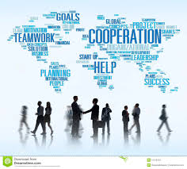

Welcome!
Im am a former international educator who is consistently developing and solving puzzles while adding value to the team. Inquiry & communication are the success keys.
Early work Gallery : console based programs


What collaborators say

My supervisor
You can use this as a place to put recommendations, accolades and testimonials
My colleugues
You can use this as a place to put recommendations, accolades and testimonials

My teachers
You can use this as a place to put recommendations, accolades and testimonials